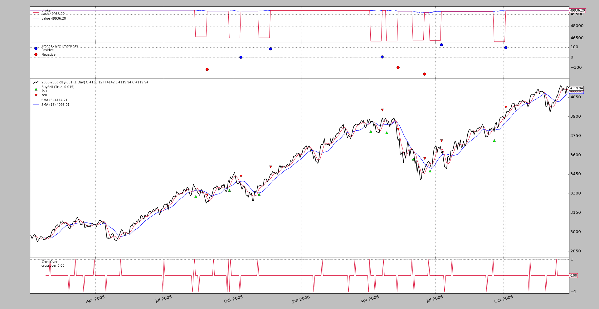

Release 1.9.34.116 adds OCO (aka One Cancel Others) to the
backtesting arsenal.
Note
This is only implemented in backtesting and there isn’t yet an implementation for live brokers
Note
Updated with release 1.9.36.116. Interactive Brokers support for
StopTrail, StopTrailLimit and OCO.
OCOSpecify always the 1st order in a group as parameterocoStopTrailLimit: the broker simulation and theIBbroker have the asme behavior. Specify:priceas the initial stop trigger price (specify alsotrailamount) and thenplimias the initial limit price. The difference between the two will determine thelimitoffset(the distance at which the limit price remains from the stop trigger price)
The usage pattern tries to remain user friendly. As such and if the logic in
the strategy has decided it is the moment to issue orders, using OCO can be
done like this:
def next(self):
...
o1 = self.buy(...)
...
o2 = self.buy(..., oco=o1)
...
o3 = self.buy(..., oco=o1) # or even oco=o2, o2 is already in o1 group
Easy. The 1st order o1 will something like the group leader. o2 and
o3 become part of the OCO Group by specifying o1 with the oco
named argument. See that the comment in the snippet indicates that o3
could have also become part of the group by specifying o2 (which as already
part of the group)
With the group formed the following will happen:
- If any order in the group is executed, cancelled or expires, the other orders will be cancelled
The sample below puts the OCO concept in play. A standard execution with a plot:
$ ./oco.py --broker cash=50000 --plot
Note
cash is increased to 50000, because the asset reaches values of
4000 and 3 orders of 1 item would require at least 12000
monetary units (the default in the broker is 10000)
With the following chart.
which actually doesn’t provide much information (it is a standard SMA
Crossover strategy). The sample does the following:
- When the fast SMA crosses the slow SMA to the upside 3 orders are issued
order1is aLimitorder which will expire inlimdaysdays (parameter to the strategy) with thecloseprice reduced by a percentage as the limit priceorder2is aLimitorder with a much longer period to expire and a much more reduced limit price.order3is aLimitorder which further reduces the limit price
As such the execution of order2 and order3 is not going to happen
because:
order1will be executed first and this should trigger the cancellation of the others
or
order1will expire and this will trigger the the cancellation of the others
The system keeps the ref identifier of the 3 orders and will only issue new
buy orders if the three ref identifiers are seen in notify_order as
either Completed, Cancelled, Margin or Expired
Exiting is simply done after holding the position for some bars.
To try to keep track of the actual execution, textual output is produced. Some of it:
2005-01-28: Oref 1 / Buy at 2941.11055
2005-01-28: Oref 2 / Buy at 2896.7722
2005-01-28: Oref 3 / Buy at 2822.87495
2005-01-31: Order ref: 1 / Type Buy / Status Submitted
2005-01-31: Order ref: 2 / Type Buy / Status Submitted
2005-01-31: Order ref: 3 / Type Buy / Status Submitted
2005-01-31: Order ref: 1 / Type Buy / Status Accepted
2005-01-31: Order ref: 2 / Type Buy / Status Accepted
2005-01-31: Order ref: 3 / Type Buy / Status Accepted
2005-02-01: Order ref: 1 / Type Buy / Status Expired
2005-02-01: Order ref: 3 / Type Buy / Status Canceled
2005-02-01: Order ref: 2 / Type Buy / Status Canceled
...
2006-06-23: Oref 49 / Buy at 3532.39925
2006-06-23: Oref 50 / Buy at 3479.147
2006-06-23: Oref 51 / Buy at 3390.39325
2006-06-26: Order ref: 49 / Type Buy / Status Submitted
2006-06-26: Order ref: 50 / Type Buy / Status Submitted
2006-06-26: Order ref: 51 / Type Buy / Status Submitted
2006-06-26: Order ref: 49 / Type Buy / Status Accepted
2006-06-26: Order ref: 50 / Type Buy / Status Accepted
2006-06-26: Order ref: 51 / Type Buy / Status Accepted
2006-06-26: Order ref: 49 / Type Buy / Status Completed
2006-06-26: Order ref: 51 / Type Buy / Status Canceled
2006-06-26: Order ref: 50 / Type Buy / Status Canceled
...
2006-11-10: Order ref: 61 / Type Buy / Status Canceled
2006-12-11: Oref 63 / Buy at 4032.62555
2006-12-11: Oref 64 / Buy at 3971.8322
2006-12-11: Oref 65 / Buy at 3870.50995
2006-12-12: Order ref: 63 / Type Buy / Status Submitted
2006-12-12: Order ref: 64 / Type Buy / Status Submitted
2006-12-12: Order ref: 65 / Type Buy / Status Submitted
2006-12-12: Order ref: 63 / Type Buy / Status Accepted
2006-12-12: Order ref: 64 / Type Buy / Status Accepted
2006-12-12: Order ref: 65 / Type Buy / Status Accepted
2006-12-15: Order ref: 63 / Type Buy / Status Expired
2006-12-15: Order ref: 65 / Type Buy / Status Canceled
2006-12-15: Order ref: 64 / Type Buy / Status Canceled
With the following happening:
- The 1st batch of orders is issued. Order 1 expires and 2 and 3 are cancelled. As expected.
- Some months later another batch of 3 orders is issued. In this case Order 49 gets
Completedand 50 and 51 are immediately cancelled- The last batch is just like the 1st
Let’s check now the behavior without OCO:
$ ./oco.py --strat do_oco=False --broker cash=50000
2005-01-28: Oref 1 / Buy at 2941.11055
2005-01-28: Oref 2 / Buy at 2896.7722
2005-01-28: Oref 3 / Buy at 2822.87495
2005-01-31: Order ref: 1 / Type Buy / Status Submitted
2005-01-31: Order ref: 2 / Type Buy / Status Submitted
2005-01-31: Order ref: 3 / Type Buy / Status Submitted
2005-01-31: Order ref: 1 / Type Buy / Status Accepted
2005-01-31: Order ref: 2 / Type Buy / Status Accepted
2005-01-31: Order ref: 3 / Type Buy / Status Accepted
2005-02-01: Order ref: 1 / Type Buy / Status Expired
And that’s it, which isn’t much (no order execution, not much need for a chart either)
- The batch of orders is issued
- Order 1 expires, but because the strategy has gotten the parameter
do_oco=False, orders 2 and 3 are not made part of theOCOgroup- Orders 2 and 3 are therefore not cancelled and because the default expiration delta is
1000days later, they never expire with the available data for the sample (2 years of data)- The system never issues a 2nd bath of orders.
$ ./oco.py --help
usage: oco.py [-h] [--data0 DATA0] [--fromdate FROMDATE] [--todate TODATE]
[--cerebro kwargs] [--broker kwargs] [--sizer kwargs]
[--strat kwargs] [--plot [kwargs]]
Sample Skeleton
optional arguments:
-h, --help show this help message and exit
--data0 DATA0 Data to read in (default:
../../datas/2005-2006-day-001.txt)
--fromdate FROMDATE Date[time] in YYYY-MM-DD[THH:MM:SS] format (default: )
--todate TODATE Date[time] in YYYY-MM-DD[THH:MM:SS] format (default: )
--cerebro kwargs kwargs in key=value format (default: )
--broker kwargs kwargs in key=value format (default: )
--sizer kwargs kwargs in key=value format (default: )
--strat kwargs kwargs in key=value format (default: )
--plot [kwargs] kwargs in key=value format (default: )
from __future__ import (absolute_import, division, print_function,
unicode_literals)
import argparse
import datetime
import backtrader as bt
class St(bt.Strategy):
params = dict(
ma=bt.ind.SMA,
p1=5,
p2=15,
limit=0.005,
limdays=3,
limdays2=1000,
hold=10,
switchp1p2=False, # switch prices of order1 and order2
oco1oco2=False, # False - use order1 as oco for order3, else order2
do_oco=True, # use oco or not
)
def notify_order(self, order):
print('{}: Order ref: {} / Type {} / Status {}'.format(
self.data.datetime.date(0),
order.ref, 'Buy' * order.isbuy() or 'Sell',
order.getstatusname()))
if order.status == order.Completed:
self.holdstart = len(self)
if not order.alive() and order.ref in self.orefs:
self.orefs.remove(order.ref)
def __init__(self):
ma1, ma2 = self.p.ma(period=self.p.p1), self.p.ma(period=self.p.p2)
self.cross = bt.ind.CrossOver(ma1, ma2)
self.orefs = list()
def next(self):
if self.orefs:
return # pending orders do nothing
if not self.position:
if self.cross > 0.0: # crossing up
p1 = self.data.close[0] * (1.0 - self.p.limit)
p2 = self.data.close[0] * (1.0 - 2 * 2 * self.p.limit)
p3 = self.data.close[0] * (1.0 - 3 * 3 * self.p.limit)
if self.p.switchp1p2:
p1, p2 = p2, p1
o1 = self.buy(exectype=bt.Order.Limit, price=p1,
valid=datetime.timedelta(self.p.limdays))
print('{}: Oref {} / Buy at {}'.format(
self.datetime.date(), o1.ref, p1))
oco2 = o1 if self.p.do_oco else None
o2 = self.buy(exectype=bt.Order.Limit, price=p2,
valid=datetime.timedelta(self.p.limdays2),
oco=oco2)
print('{}: Oref {} / Buy at {}'.format(
self.datetime.date(), o2.ref, p2))
if self.p.do_oco:
oco3 = o1 if not self.p.oco1oco2 else oco2
else:
oco3 = None
o3 = self.buy(exectype=bt.Order.Limit, price=p3,
valid=datetime.timedelta(self.p.limdays2),
oco=oco3)
print('{}: Oref {} / Buy at {}'.format(
self.datetime.date(), o3.ref, p3))
self.orefs = [o1.ref, o2.ref, o3.ref]
else: # in the market
if (len(self) - self.holdstart) >= self.p.hold:
self.close()
def runstrat(args=None):
args = parse_args(args)
cerebro = bt.Cerebro()
# Data feed kwargs
kwargs = dict()
# Parse from/to-date
dtfmt, tmfmt = '%Y-%m-%d', 'T%H:%M:%S'
for a, d in ((getattr(args, x), x) for x in ['fromdate', 'todate']):
if a:
strpfmt = dtfmt + tmfmt * ('T' in a)
kwargs[d] = datetime.datetime.strptime(a, strpfmt)
# Data feed
data0 = bt.feeds.BacktraderCSVData(dataname=args.data0, **kwargs)
cerebro.adddata(data0)
# Broker
cerebro.broker = bt.brokers.BackBroker(**eval('dict(' + args.broker + ')'))
# Sizer
cerebro.addsizer(bt.sizers.FixedSize, **eval('dict(' + args.sizer + ')'))
# Strategy
cerebro.addstrategy(St, **eval('dict(' + args.strat + ')'))
# Execute
cerebro.run(**eval('dict(' + args.cerebro + ')'))
if args.plot: # Plot if requested to
cerebro.plot(**eval('dict(' + args.plot + ')'))
def parse_args(pargs=None):
parser = argparse.ArgumentParser(
formatter_class=argparse.ArgumentDefaultsHelpFormatter,
description=(
'Sample Skeleton'
)
)
parser.add_argument('--data0', default='../../datas/2005-2006-day-001.txt',
required=False, help='Data to read in')
# Defaults for dates
parser.add_argument('--fromdate', required=False, default='',
help='Date[time] in YYYY-MM-DD[THH:MM:SS] format')
parser.add_argument('--todate', required=False, default='',
help='Date[time] in YYYY-MM-DD[THH:MM:SS] format')
parser.add_argument('--cerebro', required=False, default='',
metavar='kwargs', help='kwargs in key=value format')
parser.add_argument('--broker', required=False, default='',
metavar='kwargs', help='kwargs in key=value format')
parser.add_argument('--sizer', required=False, default='',
metavar='kwargs', help='kwargs in key=value format')
parser.add_argument('--strat', required=False, default='',
metavar='kwargs', help='kwargs in key=value format')
parser.add_argument('--plot', required=False, default='',
nargs='?', const='{}',
metavar='kwargs', help='kwargs in key=value format')
return parser.parse_args(pargs)
if __name__ == '__main__':
runstrat()
{kind=link}